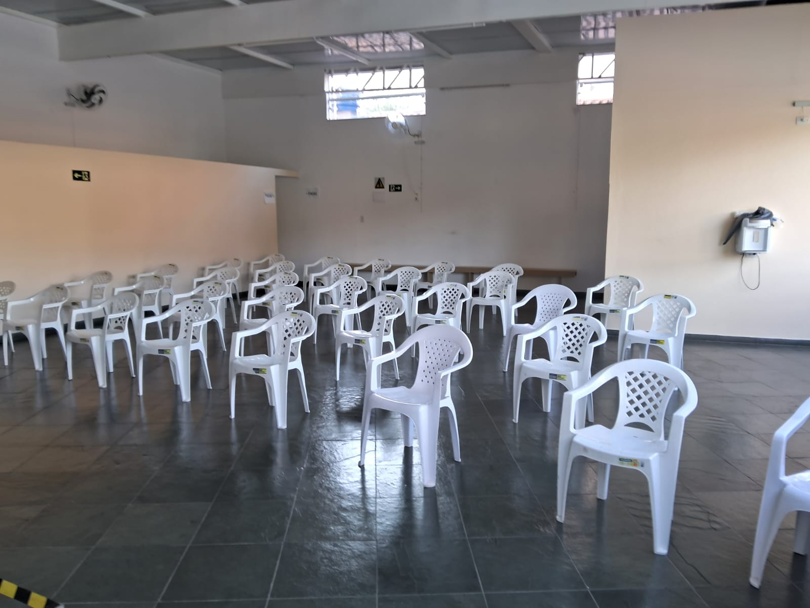
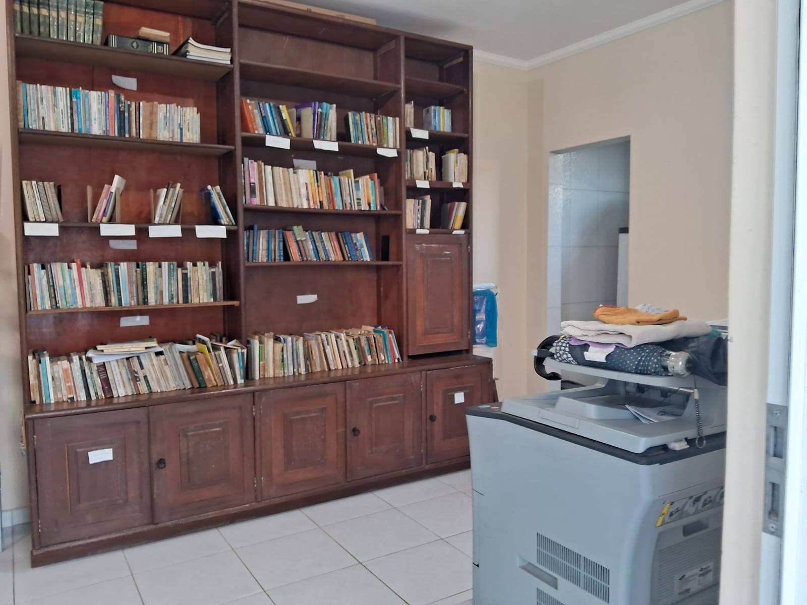
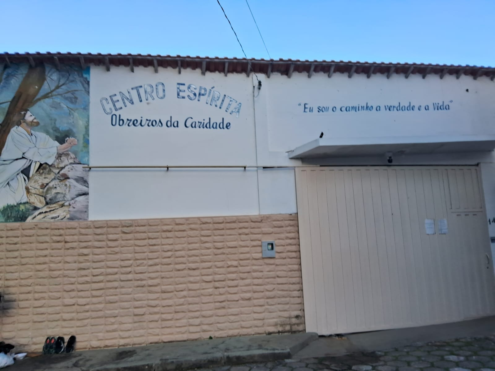
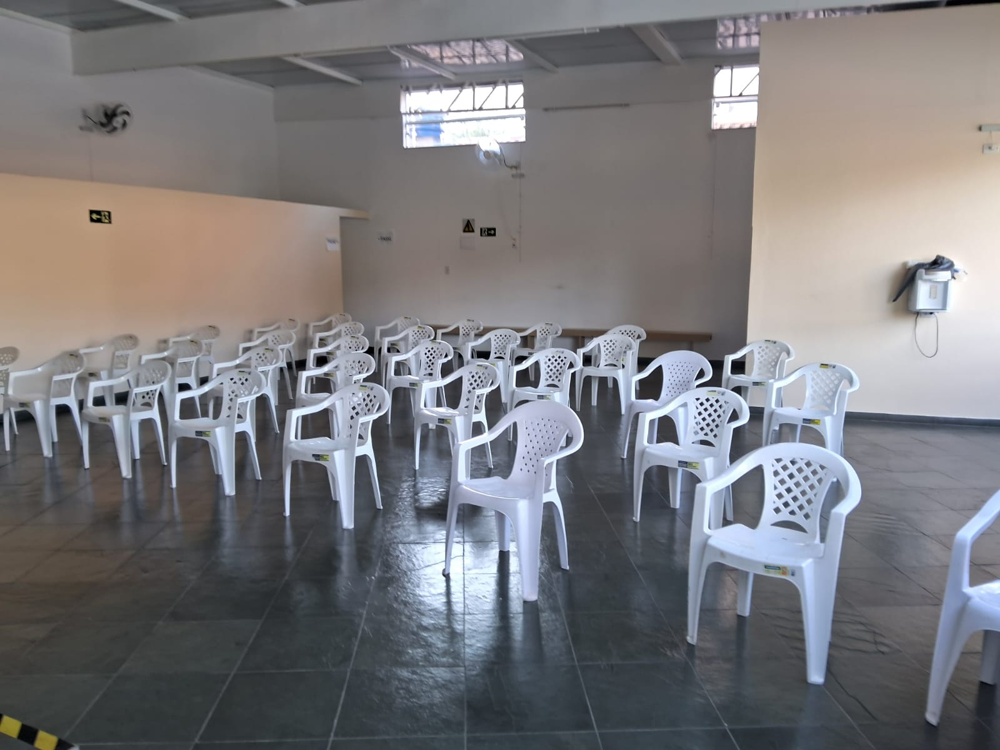
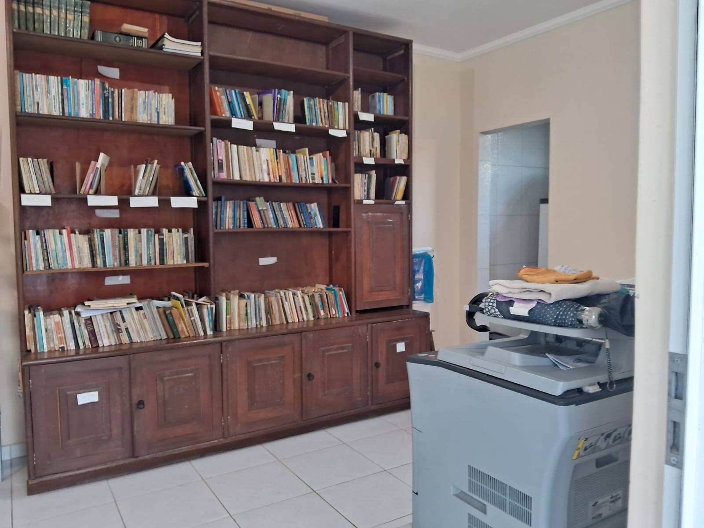
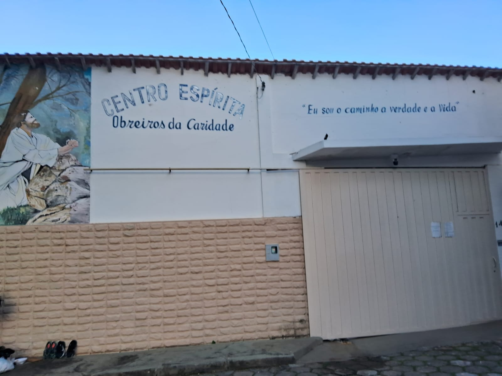

Sobre
O Centro Espírita Obreiros da Caridade de São Lourenço - MG é um espaço dedicado ao estudo e prática da Doutrina Espírita.
Foi fundado em 5 de Setembro de 1996 e desde então buscar seguir e divulgar os princípios da doutrina espírita sempre à luz do evangelho de Jesus Cristo.
O Centro está aberto à todos que possuam interesse em conhecer um pouco mais sobre a doutrina.
Atividades e Horários
- Palestras abertas ao público: Segunda-feira e Quarta-feira às 20:00
- Estudos doutrinários: Sábado a partir das 15:00 às 16:00
- Tratamento espiritual para enfermidades: Sábado a partir das 16:00
 





Localização
Estamos localizados na Rua Comendador Oscár Fagundes, 140, São Lourenço - Minas Gerais
Clique no mapa abaixo para mais informações: ⬇️⬇️